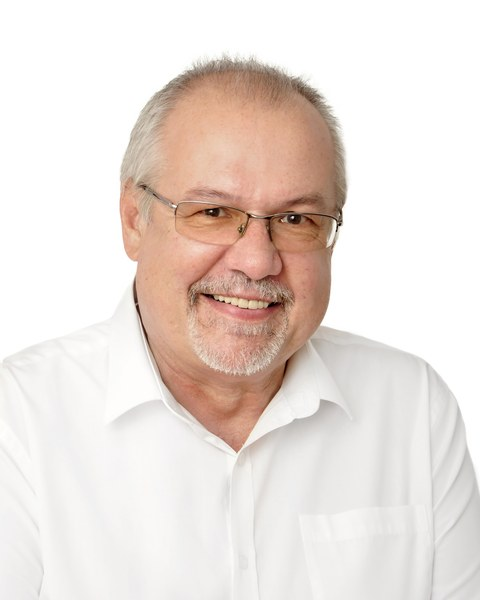
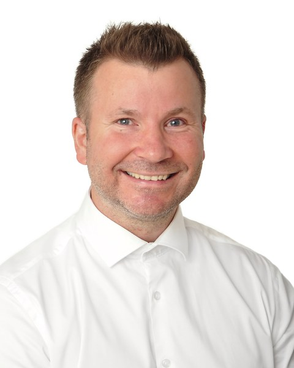
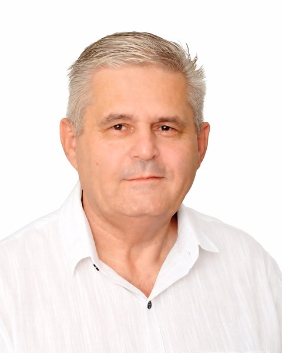
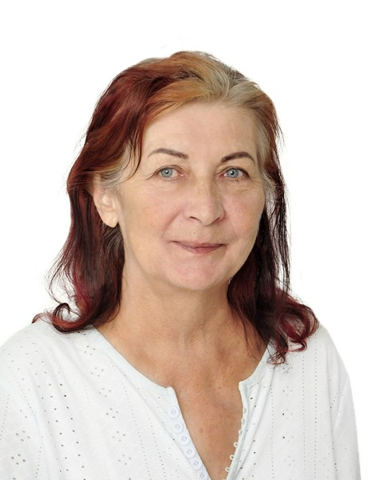
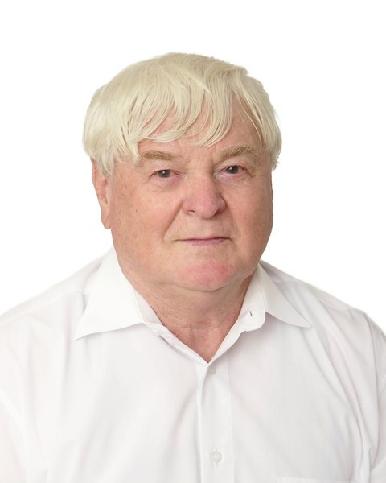
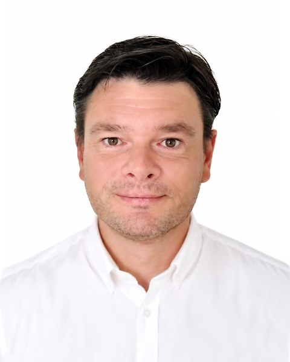
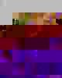

Komplexní rozvoj města
Chceme rozvíjet veřejná prostranství, sportoviště a městskou infrastrukturu. Součástí je také knihovna a komunitní centrum v bývalé ZŠ Náměstí a systematická oprava chodníků.
Kandidáti do Zastupitelstva města Kopřivnice
PATRIOTI PRO KOPŘIVNICI jsou politickým sdružením lidí, kterým záleží na budoucnosti našeho města. Tvoří nás převážně nestraníci z různých profesí a prostředí, kteří chtějí své zkušenosti využít pro rozvoj Kopřivnice a jejích místních částí. Jedinou výjimkou je jeden člen sdružení, který je členem politické strany.
Spojuje nás zájem o Kopřivnici, nikoliv stranická politika. Zaměřujeme se především na dostupné bydlení, rozvoj města a infrastruktury, veřejný prostor, dopravu a parkování, školství, sport, sociální oblast a rozvoj místních částí.
Chceme rozvíjet veřejná prostranství, sportoviště a městskou infrastrukturu. Součástí je také knihovna a komunitní centrum v bývalé ZŠ Náměstí a systematická oprava chodníků.
Prosazujeme transparentní veřejnou správu a podporu místních živnostníků a podnikatelů. Zaměříme se také na bezpečnost, městskou policii a prevenci kriminality.
Chceme podporovat dostupné bydlení a vznik startovacích bytů pro mladé rodiny. Zaměříme se také na rozvoj lokalit Západ a Dolní Roličky a využití vhodných městských prostor.
Program počítá s úspornějším hospodařením s energiemi, komunitní energetikou a fotovoltaikou. Důraz klademe také na dopravu, parkování, vlakové spojení s Ostravou a ekologické nakládání s odpady.
Chceme investovat do škol, sportovišť a kulturních zařízení a podporovat sport dětí a mládeže. Součástí programu je také klub pro mladé a podpora cestovního ruchu.
Budeme podporovat dostupnost zdravotní péče a rozvoj sociálních služeb pro seniory. Pozornost věnujeme také odlehčovacím službám, dennímu stacionáři a aktivitám pro seniory.
Chceme podporovat rozvoj a vhodnou autonomii místních částí včetně veřejných prostranství, osvětlení a volnočasových aktivit. Program zahrnuje také konkrétní projekty v Mniší, Vlčovicích, Lubině a Větřkovicích.

1právník

2projektový vedoucí

3OSVČ
daňový specialista

5psycholog
farmaceutický laborant

7mykolog
technik
student
technik
student
trenér Aikidó

13pracovník logistiky
OSVČ

15strojírenský dělník
barman
vedoucí provozu
montážní dělník
mobilní masér
 20
20operátor CNC modulů
pracovník v gastronomii
Sport, MŠ Pionýrská, parkování i kontrola městských investic.
Dostupné bydlení, veřejný prostor a parkování. Rozhovor s lídrem kandidátky Mgr. Dušanem Krompolcem.
Komplexní rozvoj města, bydlení, doprava a parkování, školství, sociální oblast a rozvoj místních částí.
Informace o našich aktivitách a dění v Kopřivnici.
Kontaktní informace doplníme podle podkladů, které chcete zveřejnit.